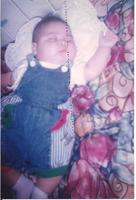
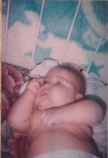
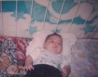
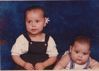
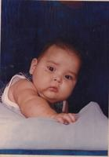
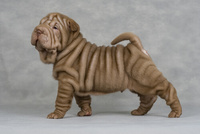
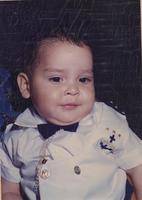
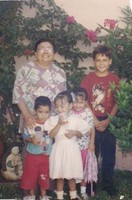
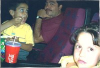

Esta es mi familia, solo tengo una hermana mayor que yo, por un año siete meses. Mi mama en su niñez vivía en un rancho más allá de San José de Ahome llamado Las Grullas ahí nació y vivió hasta que en el año de 1982 llego el huracán Paul y debido a esto se desbordo el rio y no hubo más que hacer que desalojar el lugar. Vivieron en diversas partes antes de venir a Los Mochis como las Higueras. Cuando llegaron y se quedaron en Los Mochis mi mama se tuvo que poner a trabajar desde muy pequeña ya que no tenían ni con que comer. Ella misma se pagó la escuela secundaria ya que mis abuelos no tenían para pagarla y le decían que se saliera que no servía para nada. Paso por diversos trabajos en el mercado, en los jugos que están contra esquina del chiflador, en pollerías, en la ley tabachines, en casas limpiando, bueno muchísimas partes solo para poder estudiar. Mientras trabajo de cajera en Ley tabachines conoció a mi papa él trabajaba de seguridad. Mi papá nació en Los Mochis él viajaba constantemente de niño porque tiene tías en el DF, Ensenada, Tijuana y era de los sobrinos consentidos.
Yo al nacer pese 3.750kg era un bebé bastante gordito. Estas son algunas fotos. Al cumplir los 6 meses llegue a pesar 15kg.
Estos somos mi hermana y yo de bebé. Mi hermana siempre se ponían en pose como si fuera modelo muy fotogénica ella. Yo era el típico niño gordito que todos le jalan los cachetes.
Se me hacían unas lonjitas en los brazos que parecía hijo de Michelin. Aquí la comparación.
O también se parecen a una raza de perros que se llama shar pei, esos perros sí que tienen lonjitas. Son como la imagen de la derecha.
Pero vestido de marinero me veía súper bien.
 Durante mi infancia siempre me gusto ir a las reuniones familiares. Por ejemplo esta foto fue una navidad en casa de mi bisabuela. Nos reuníamos todos y me encantaba jugar con mis primos (miren bien esa camisa verde de Yu-Gi-Oh! a mí me encantaba así que la volverán a ver).
Durante mi infancia siempre me gusto ir a las reuniones familiares. Por ejemplo esta foto fue una navidad en casa de mi bisabuela. Nos reuníamos todos y me encantaba jugar con mis primos (miren bien esa camisa verde de Yu-Gi-Oh! a mí me encantaba así que la volverán a ver).
Aquí estamos unos primos y mi bisabuela. Yo soy el más pequeño. No recuerdo en que época del año fue pero siempre estábamos visitando a mi bisabuela. Como mi abuela paterna la cuidaba pues vivían juntas y a nosotros nos consentían ambas.
Otra de las cosas que me gustaba hacer en mi infancia y que aún me gusta hacer es ir al cine el solo hecho de llegar y oler las palomitas me encantaba, pero lo que más me gustaba era comórmelas.